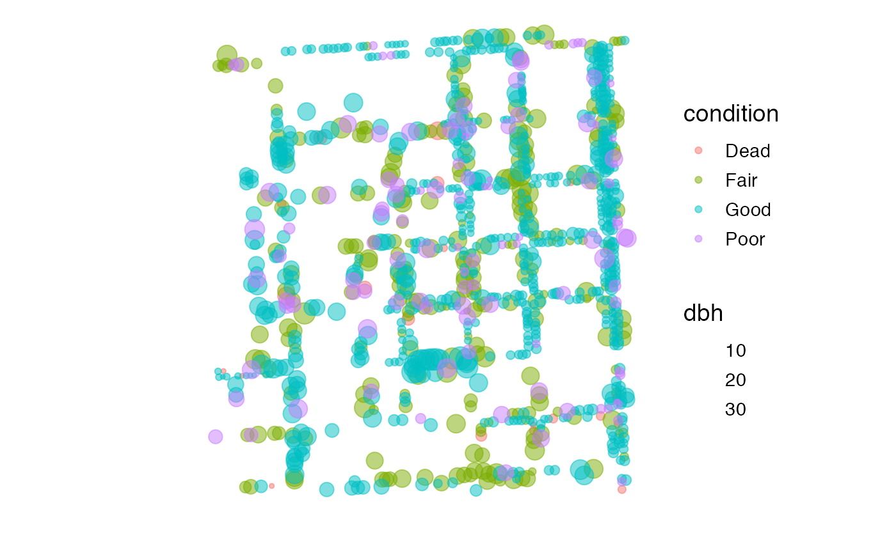
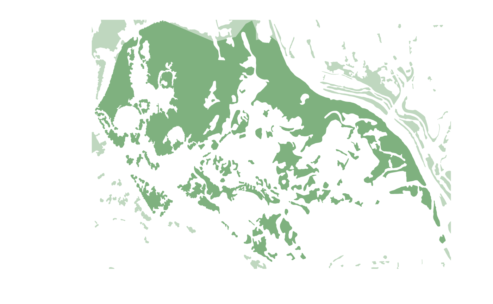
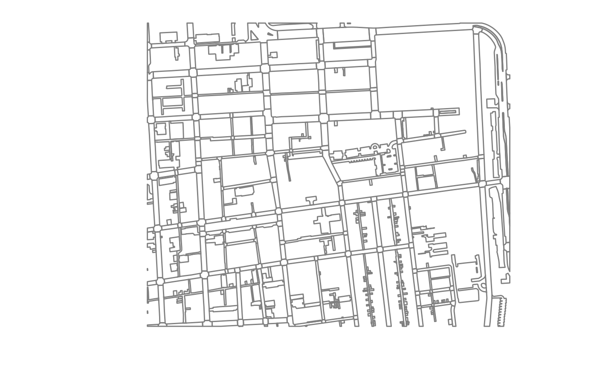
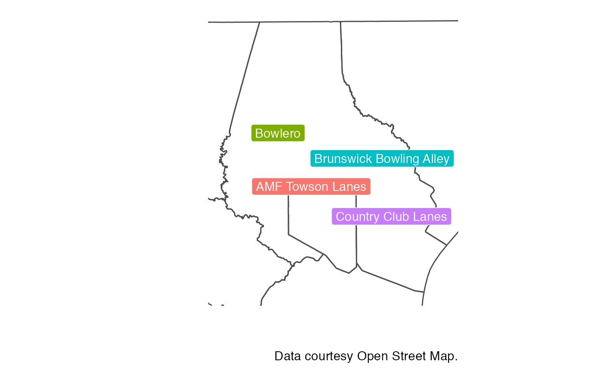

External, cached, and remote data sources
Source:vignettes/articles/extdata_cachedata.Rmd
extdata_cachedata.RmdIntroduction
Not all of the data for mapbaltimore is loaded when you first load the package. The reason is that large spatial data sets can take a long time to load and slow down your environment after they are loaded into active memory. GitHub also has a maximum file size of 100 megabytes. While some data sets are rarely updated, others are regularly updated—making the data included with this package potentially outdated.
mapbaltimore works around these issues in a few different ways:
- Storing large (<100 MB) data sets as geopackage (.gpkg) files in
the
inst/extdatafolder - Caching very large (>100 MB) data sets as geopackage files in a
cache folder selected using the
rappdirs::user_cache_dir()function - Offering other functions to download spatial data from remote sources including city and state ArcGIS servers, the state open data portal, and on Open Street Map
The external and cached data sources are never fully loaded into
active memory. Instead, mapbaltimore uses the wkt_filter
parameter for the sf::st_read() function as described in this post on
Working with Large Spatial Data in R by Rob Williams to import only
the data you need. Continue reading to explore how these three different
data access options work within the package.
External data sources
Currently, the external data sources include:
- Trees (also available on the Tree Baltimore website)
- Unimproved property (a subset of the cached real property data)
- Vegetated areas
This data can be accessed using the extdata parameter of the
get_area_data function as the following examples
illustrate.
# Get trees in the Oliver neighborhood
oliver_trees <- get_area(type = "neighborhood", area_name = "Oliver") %>%
get_area_data(extdata = "trees")
#> Reading layer `trees' from data source
#> `/private/var/folders/3f/50m42dx1333_dfqb5772j6_40000gn/T/Rtmpys5Z3S/temp_libpath5f7142c9ecc1/mapbaltimore/extdata/trees.gpkg'
#> using driver `GPKG'
#> Simple feature collection with 1067 features and 15 fields
#> Geometry type: POINT
#> Dimension: XY
#> Bounding box: xmin: 434147.3 ymin: 181822.2 xmax: 434972.5 ymax: 182735.6
#> Projected CRS: NAD83(HARN) / Maryland
# Show the top 6 species pluralis (spp) by number
oliver_trees %>%
sf::st_drop_geometry() %>%
dplyr::count(spp, sort = TRUE, name = "count") %>%
dplyr::slice_head(n = 6) %>%
knitr::kable()| spp | count |
|---|---|
| Acer rubrum | 211 |
| Quercus phellos | 101 |
| Prunus spp. | 69 |
| Zelkova serrata | 57 |
| Platanus x acerifolia | 49 |
| Ulmus x | 46 |
# Plot tree locations sized by diameter at breast height (dbh)
oliver_trees %>%
ggplot() +
geom_sf(aes(size = dbh, color = condition), alpha = 0.5)
druidhill <- get_area(type = "neighborhood", area_name = "Druid Hill Park")
get_area_data(area = druidhill, extdata = "vegetated_area") %>%
ggplot() +
geom_sf(fill = "darkgreen", alpha = 0.5) +
layer_area_mask(area = druidhill, alpha = 0.5, fill = "white", color = NA, dist = 5)
#> Reading layer `vegetated_area' from data source
#> `/private/var/folders/3f/50m42dx1333_dfqb5772j6_40000gn/T/Rtmpys5Z3S/temp_libpath5f7142c9ecc1/mapbaltimore/extdata/vegetated_area.gpkg'
#> using driver `GPKG'
#> Simple feature collection with 182 features and 2 fields
#> Geometry type: MULTIPOLYGON
#> Dimension: XY
#> Bounding box: xmin: 429440.2 ymin: 182795.9 xmax: 432629.7 ymax: 185069.4
#> Projected CRS: NAD83(HARN) / Maryland
Incomplete documentation for these external datasets is included in
the extdata.R file but this documentation not exported so
cannot be accessed directly via the help menu.
Cached data sources
After you first install mapbaltimore, you want to run
cache_mapbaltimore_data with no parameters to access real
property data, edge of pavement data, and streets outside Baltimore
City. Customizing the cache location or the coordinate reference system
is possible but it is not recommended. Downloading all of this data
takes a very long time and takes up around around 700 MB when
all three files are cached.
To update the cached files, use the overwrite = TRUE
parameter. I recommend overwriting individual data sets rather than all
cached data sets as the real_property data set is the only
one that should require occasional updates.
# cache_mapbaltimore_data()
# cache_real_property(overwrite = TRUE)After the data is cached, it can always be accessed using the
cache_data parameter of get_area_data().
get_area(type = "neighborhood", area_name = "Federal Hill") %>%
get_area_data(data = "edge_of_pavement") %>%
ggplot() +
geom_sf(color = "grey50")
#> Reading layer `edge_of_pavement' from data source
#> `/Users/elipousson/Library/Caches/mapbaltimore/edge_of_pavement.gpkg'
#> using driver `GPKG'
#> Simple feature collection with 481 features and 2 fields
#> Geometry type: MULTIPOLYGON
#> Dimension: XY
#> Bounding box: xmin: 433023.3 ymin: 178513.8 xmax: 434164.2 ymax: 179718.8
#> Projected CRS: NAD83(HARN) / Maryland
The map_area_property() function requires the cached
real property data and will not work without it.
get_area(type = "neighborhood", area_name = "Morgan Park") %>%
map_area_property(
property = "principal residence",
show_mask = TRUE
)Other functions such as layer_area_streets() use an
optional parameter to determine whether to use the city streets data or
the cached baltimore_msa_streets data. Maps that show area
near or crossing the city boundaries show much better when the full data
can be used.
second_district <- get_area(type = "congressional district", area_name = "2nd District")
district_map <- ggplot() +
geom_sf(data = second_district, fill = "springgreen", alpha = 0.2)
# If msa = FALSE, layer_area_streets uses the city streets data
district_map + layer_area_streets(area = second_district, sha_class = c("INT", "FWY"))
# If msa = TRUE, layer_area_streets uses the cached baltimore_msa_streets data
district_map +
layer_area_streets(area = second_district, sha_class = c("INT", "FWY"), msa = TRUE)Remote data sources
Both the externally stored and cached data could be access remotely whenever needed but the large file size makes keeping a local version much faster. If the data is more frequently updated (or less frequently used), downloading the data whenever it is needed is likely preferable.
For example, get_area_esri_data() can take a
url for an ArcGIS MapServer or FeatureServer or take a
type parameter that corresponds to a MapServer or
FeatureServer url from Open Baltimore, Maryland iMap, or the Maryland Food System Map. The
list of urls is currently internal system data but will be opened to
package users in the future.
north <- get_area(type = "planning district", area_id = "North")
ggplot() +
layer_area_streets(area = north, sha_class = c("PART", "MART")) +
geom_sf(
data = get_area_esri_data(area = north, type = "red light cameras"),
fill = "red", shape = 21, size = 4, color = "black"
) +
geom_sf(data = get_area_esri_data(area = north, type = "fixed speed cameras"), fill = "yellow", shape = 25, size = 2, color = "black")get_area_osm_data wraps the osmdata package
largely to simplify the experience of using the package. Open Street Map
is particularly useful for accessing data that may not be available from
other non-commercial sources, such as the location of bowling alleys in
Baltimore City and County. Be aware that the Open
Street Map license requires credit any time you use OSM data.
baltimore_county <- dplyr::filter(baltimore_msa_counties, namelsad == "Baltimore County")
baltimore_county %>%
get_area_osm_data(
key = "leisure",
value = "bowling_alley",
trim = TRUE,
crs = 2804
) %>%
dplyr::filter(!is.na(name)) %>%
ggplot() +
geom_sf(data = baltimore_msa_counties, color = "grey30", fill = NA) +
ggrepel::geom_label_repel(aes(fill = name, label = name, geometry = geometry), stat = "sf_coordinates", force = 10, color = "white") +
set_map_limits(area = baltimore_county) +
guides(fill = "none") +
labs(caption = "Data courtesy Open Street Map.")
#> Open Street Map data is available under the Open Database Licence which requires attribution. See https://www.openstreetmap.org/copyright for more information.
Lastly, get_maryland_open_resource() can be used to
access data from the Socrata-based Maryland Open Data portal by wrapping
the RSocrata::read.socrata() function. The
get_area_crashes function calls
get_maryland_open_resource() using the appropriate
identifier for the table on vehicular crashes.
charles_north <- get_area(type = "neighborhood", area_name = "Charles North")
charles_north %>%
get_area_crashes(geometry = TRUE, trim = TRUE) %>%
ggplot() +
layer_area_streets(area = charles_north) +
geom_sf(color = "orangered", alpha = 0.75, size = 2.5) +
geom_sf(data = charles_north, color = "black", fill = NA, size = 2, linetype = "dashed")